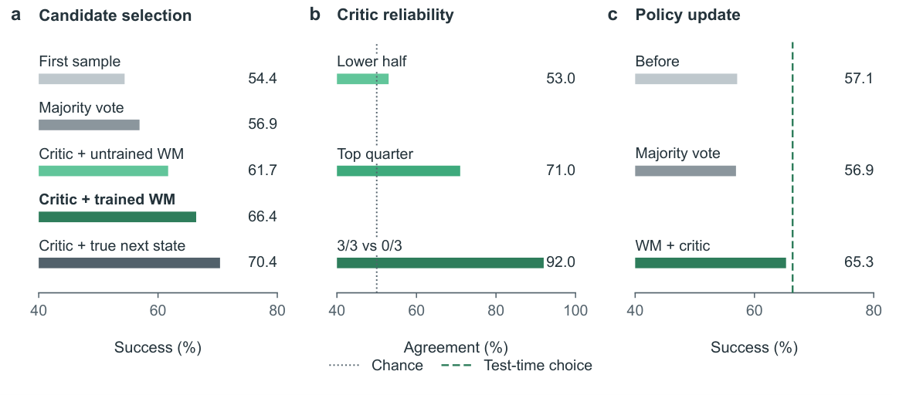
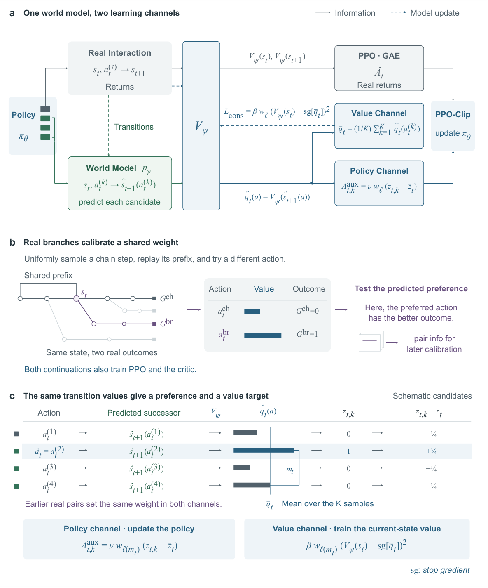
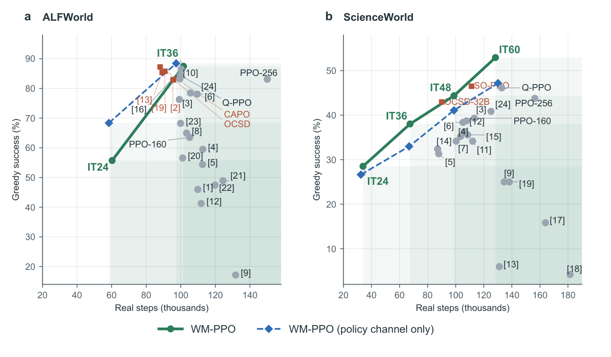
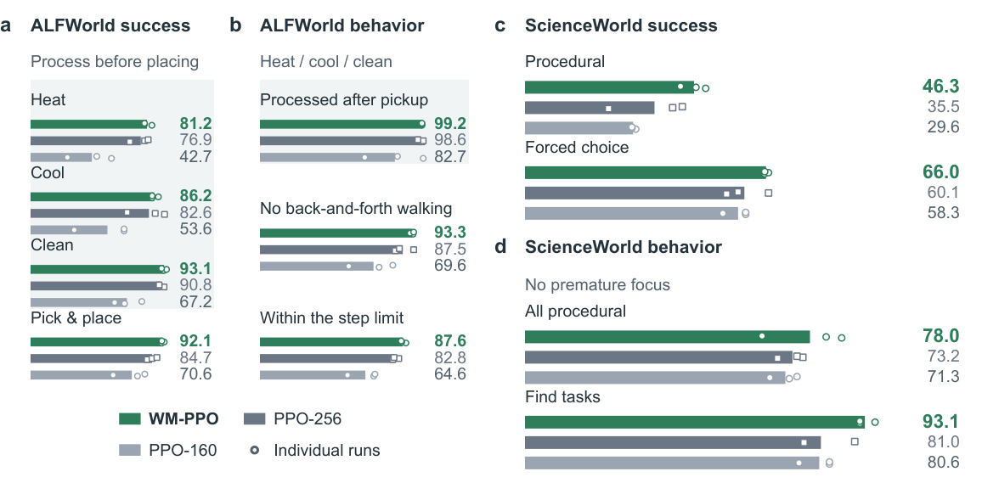
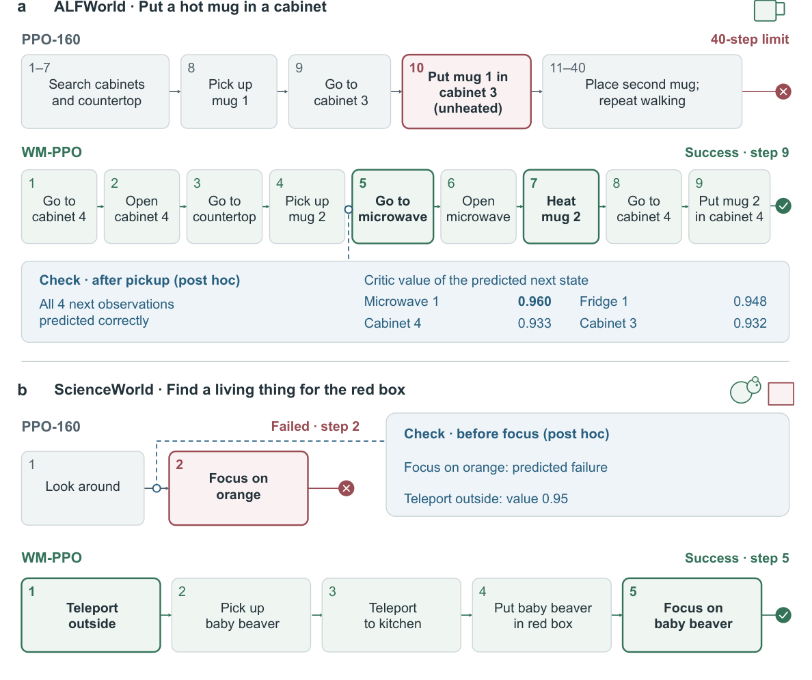
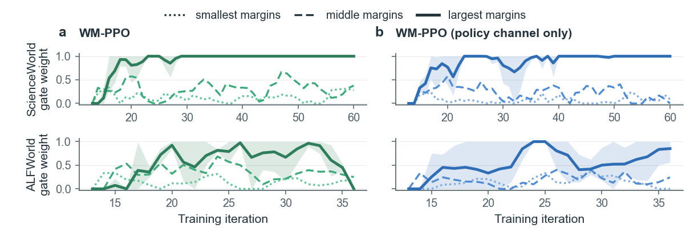
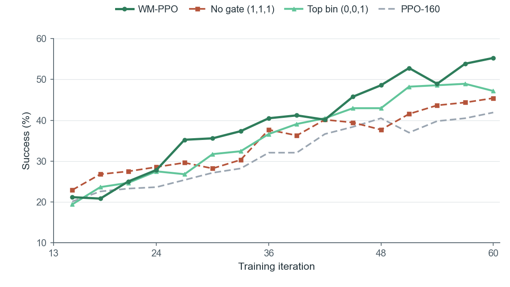

Can the critic value real successors?
56.9% → 70.4%
Majority vote versus selecting candidates using the critic on their real next states.
A sparse reward tells an agent whether it succeeded. The transitions it experiences reveal what has changed. Can we turn those changes into useful signals for learning?
01 / Motivation
The central gap is not merely an insufficient number of reward labels. It is the missing interpretation of how each action changes the conditions for eventual success.
Imagine an agent tasked with cleaning a plate and putting it in a cabinet. It may find the plate and carry it to the cabinet, but place it there before cleaning it. The final reward marks the attempt as a failure without explaining which earlier choice was decisive.
World models can predict what happens after an action—but a predicted observation is not itself a measure of progress. Opening an irrelevant cabinet might produce a long description without helping the task; heating a mug may produce a short confirmation that establishes a crucial prerequisite.
A world model learns action-conditioned environment dynamics from the agent's observed state transitions.
The existing critic estimates what the current policy can still accomplish from the resulting state.
The value of a transition is therefore tied to the change in the current policy's success probability—not the surface size of the observation change. As the policy improves, the same successor state may have a different value.
02 / Before the algorithm
The paper first establishes the premise on ALFWorld before introducing the online training method.

Majority vote versus selecting candidates using the critic on their real next states.
The trained world model supplies predicted successors; the critic values them for candidate selection.
One reward-free diagnostic policy update; the updated policy then acts on its own.
These are three diagnostic experiments with a fixed initial policy—not the final WM-PPO online update. Ranking reliability depends on the value gap, which motivates the gate in the full method.
03 / Method
Transition values are obtained once and reused to guide the policy and train the critic; observed branch outcomes calibrate both.

At each training state, the policy samples K actions and executes its first sample. For every distinct candidate, the world model predicts its next observation, and the critic values that predicted successor. The resulting estimates approximate the candidate actions' success values.
Comparisons among candidates generate auxiliary preferences and advantages in PPO's clipped policy objective. The candidates need not all have been executed.
The update is based on the policy's own sampled candidates, not labels from an external teacher.
The mean of the candidate transition values provides a one-step auxiliary target for the current state's critic, alongside supervision from real returns.
A better critic can also improve PPO's later advantage estimates and future candidate comparisons.
Prediction can be mistaken; value rankings can be weak. Real main-episode and branch outcomes test earlier preferences. A single margin-dependent gate weights both learning channels according to whether comparisons of similar size have actually distinguished better outcomes. The predicted alternatives never replace real rewards or become fabricated environment returns.
04 / Evaluation
Final evaluation uses the learned policy alone. The primary comparison approximately matches real environment interaction budgets.
Means of three runs for WM-PPO and PPO-160; greedy policy-only evaluation. The real-step budget is comparable, not literally identical (102k vs 105k steps on ALFWorld; 128k vs 113k on ScienceWorld). See Table 2 and Figure 4 for the full protocol.

Wide-Tree-PPO keeps the rollout-tree structure but removes the auxiliary candidate update; on ScienceWorld it reaches 40.8%, versus 52.9% for full WM-PPO. Other controls isolate direct Q-value learning and frozen dynamics.
On ScienceWorld, the policy channel alone reaches 47.2%; the full method reaches 52.9%. On ALFWorld, the methods are close to the task ceiling, and the extra value channel does not improve final success.
05 / Understanding the gains
A method should change how the agent advances the task, not just how its learning curve looks.
The agent learns to complete prerequisites before taking the action that depends on them.
In ALFWorld, the trained policy more often heats, cools, or cleans an object before placing it. In ScienceWorld, it less often commits to a final focus before the necessary conditions exist.


06 / Reliability
Predicted comparisons are not equally reliable. Late in ScienceWorld training, the preferred action has the better real outcome in 84% of branch pairs with different outcomes in the largest margin bin, while the smaller bins are close to chance.
A single gate therefore decides when, and how much, these comparisons shape both networks: the same weight scales the policy's auxiliary advantages and the critic's auxiliary loss, and each margin bin earns its weight from the realized gain of its earlier comparisons.

On ScienceWorld, the gate starts closed and opens as the critic and world model become reliable. The largest bin reaches full weight early and keeps it; the smaller bins, close to chance but with a slightly positive gain, stay at low weights, so their weak signal enters both channels without dominating them. The value channel feeds this calibration: with more reliable comparisons, WM-PPO's largest bin opens earlier and stays open, its critic fits real returns better late in training (explained variance 0.49 against 0.30 with the policy channel only), and it pulls ahead of the policy-channel-only variant from iteration 36 onward. On ALFWorld, the same calibration withdraws feedback as success approaches the ceiling.

Fixing the weights shows what this calibration contributes. Full weight rises fastest at first, but the near-chance preferences of the smaller bins keep entering at the same weight as the reliable ones, and its success later grows no faster than PPO-160's. Keeping only the largest bin is stable but stays below WM-PPO: it never receives the weak signal of the smaller bins, and it trusts the largest bin before its comparisons have proven reliable. Both copies end significantly below WM-PPO, ordered by the reliability of the margin bins.
This is an essential part of the argument: world-model prediction is a source of potentially useful information, not an oracle. The method lets real interactions determine which classes of predicted preferences are reliable enough to influence learning.
07 / Citation
@misc{gao2026learning,
title = {Learning to Act with World Models by Valuing What Comes Next},
author = {Gao, Chenghao and Zhang, Zhi and Jin, Dian and Pan, Yihe and Zhou, Doudou},
year = {2026},
eprint = {2611.12200},
archivePrefix = {arXiv},
primaryClass = {cs.AI},
url = {https://arxiv.org/abs/2611.12200}
}Read the full paper for the diagnostic design, online algorithm, baselines, reliability calibration, interaction accounting, and limitations. Code, configurations, per-game evaluation data and checkpoints are on GitHub and Hugging Face.